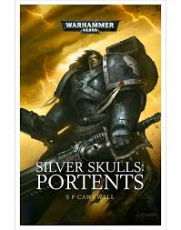

Series
Boeken
Silver Skulls: Portents
Schrijver: Sarah CawkwellPublicatiejaar: 2014 Het verhaal: Het Silver Skulls Space Marines Chapter wordt ingezet op de wereld Valoria Quintus om een opstand die door de gevreesde troepen van de gevreesde Traitor Legions wordt ondersteund de kop in te drukken. Ze werden erheen gestuurd door hun Prognosticars, de mysterieuze zieners wiens voorgevoelens het pad van het Chapter bepalen, en ze verwachten dat het een snelle en makkelijke overwinning zal zijn. Maar ze hebben geen rekening gehouden met hun eigen bondgenoten, de dienaren van de Inquisitie die geinteresseerd zijn in de Prognosticars, hun belang in het Chapter en de mogelijkheid dat de Silver Skulls misschien worden gemanipuleerd door de krachten tegen wie ze vechten...